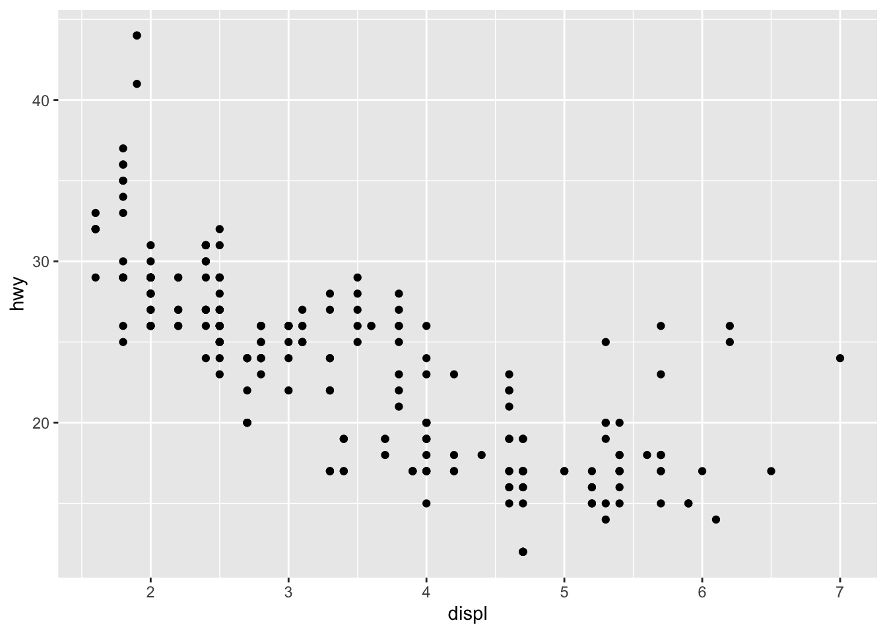
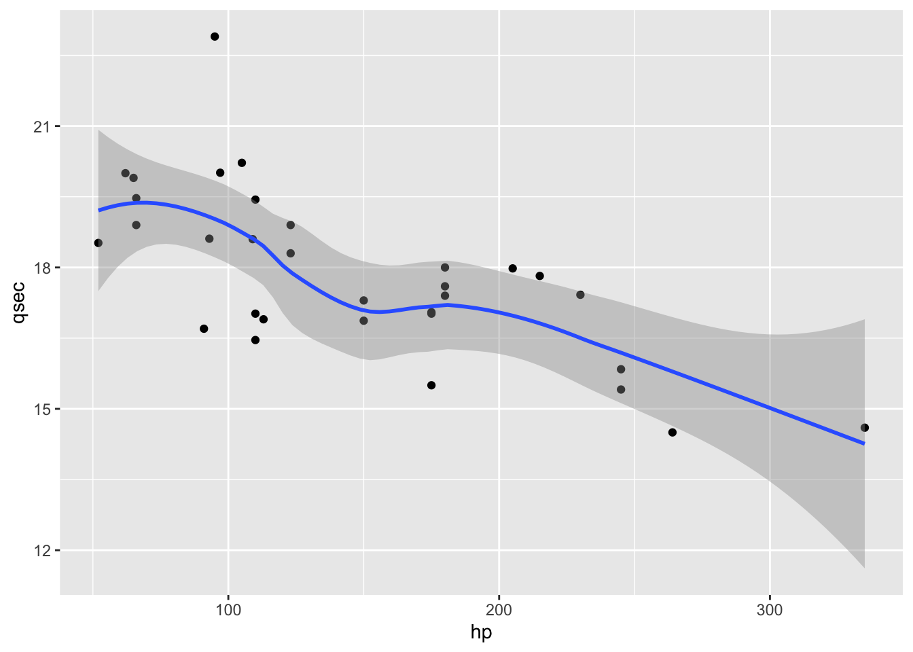
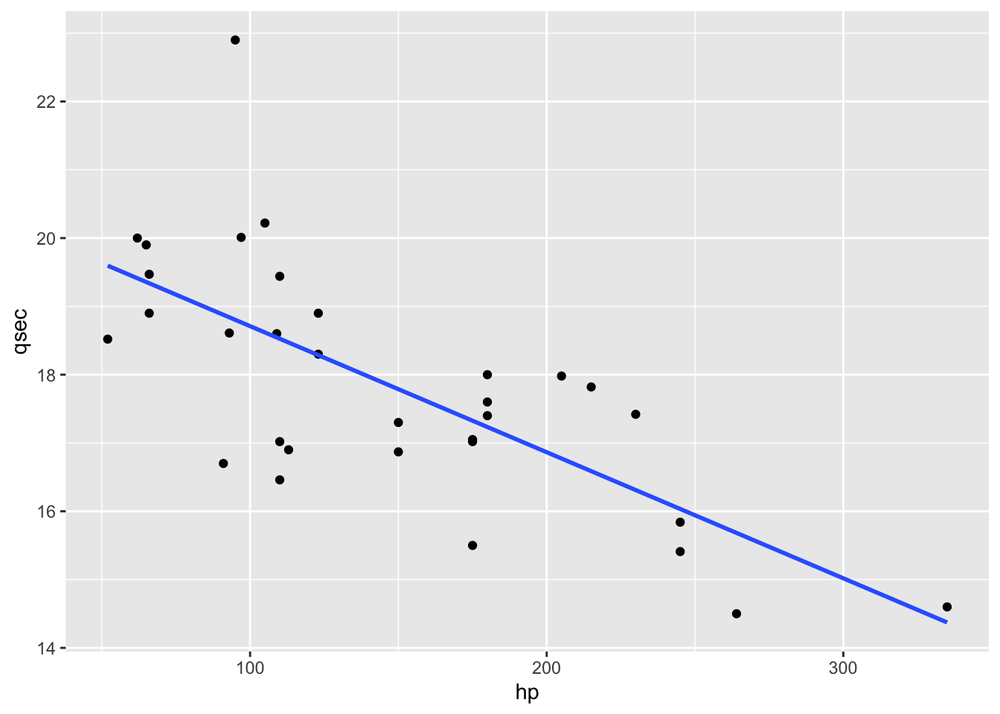
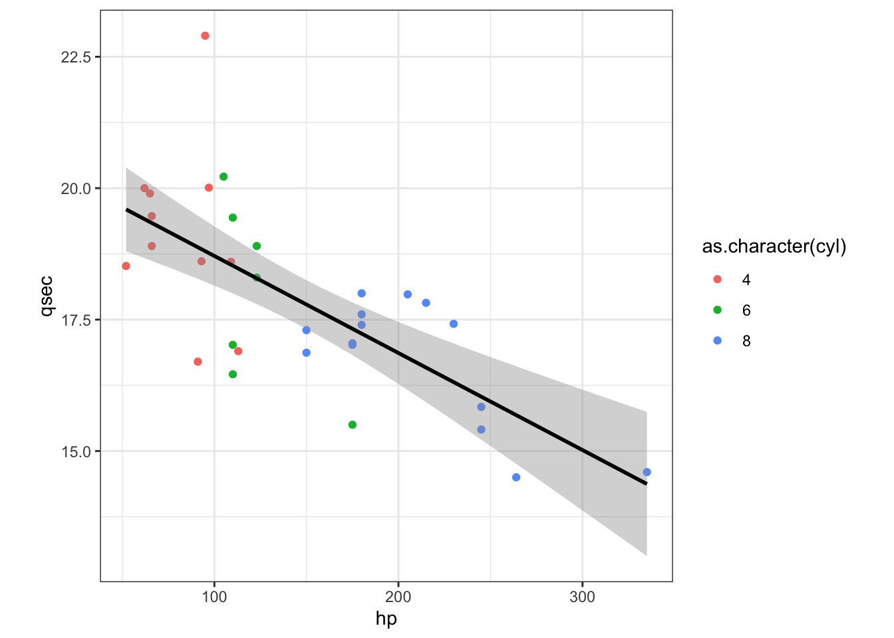
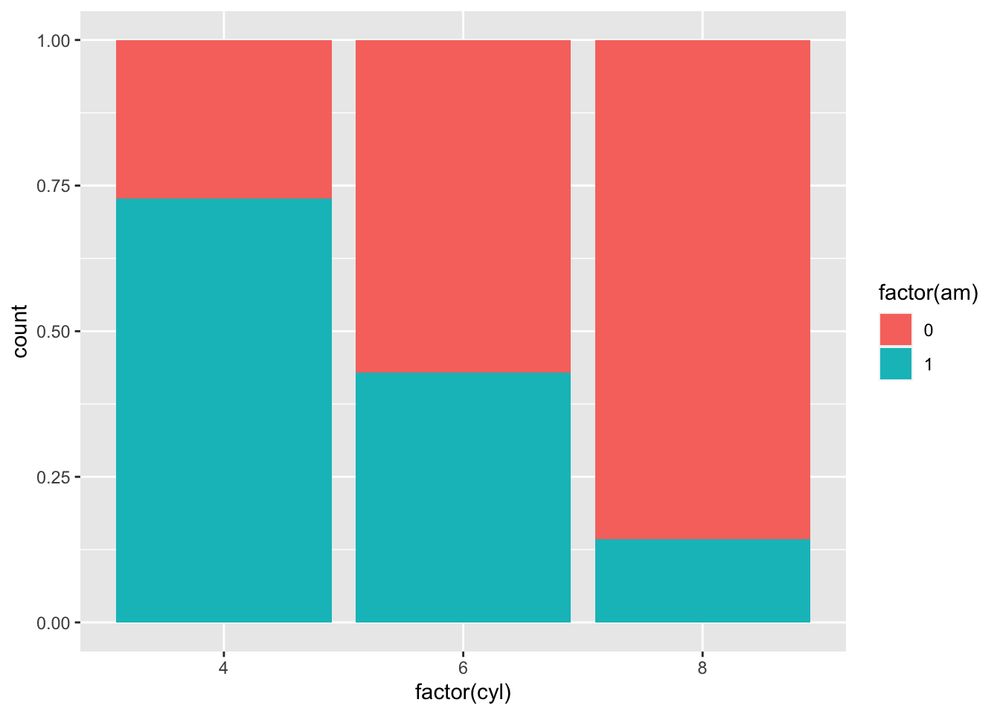
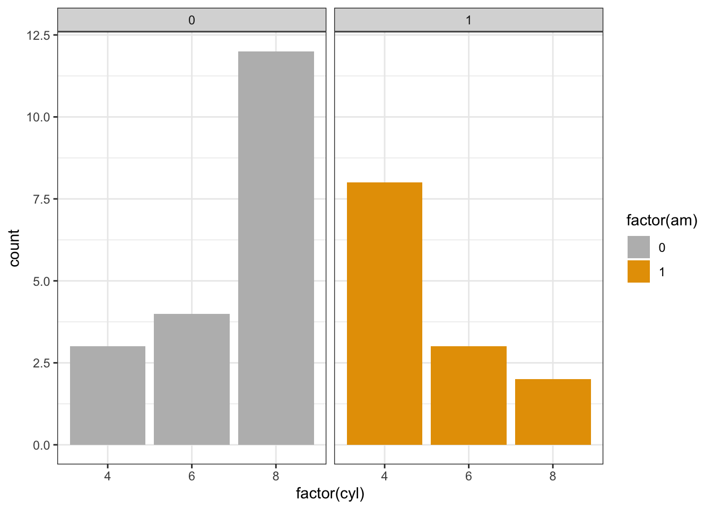

Session 2 Basic Introduction to R and ggplot2
This is an introduction to R and ggplot2 that was created specificially for the UCMexus Conservation Genomics Workshop 2022. The data used in this tutorial is a typical dataset used in ggplot.
2.1 RStudio Layout
The RStudio layout is broken up into four panes: Source, Console, Environment (history/connections) and Files (plots/packages/etc). Within these panes there are additional tabs and we will go over the most important ones.
The Source pane is where you can read, edit, and run your R code and the code can be saved as a .R file indicating it is an R script document, or .Rmd file indicating it is an R markdown file with the code split into code chunks that you’ll see throughout this tutorial.
An R document is written as a normal text document, however each line is a line of code in R. However if you highlight a line and click Run (or type command-return), then the line of code will be executed and this activity will be displayed in the Console.
The Console pane is where the R code is executed and results are displayed, as well as other messages and warnings.
The Environment pane lists all available data and variables in the current session. For example, in the example Source pane above I have a line of code another_variable <- 5 which sets the string another_variable to represent the value 5. After executing this line of code, the variable is stored and can be called at any point. Once a variable has been created, it will be displayed in the Environment.
another_variable<-5
another_variable## [1] 5another_variable*5## [1] 25Note: Whenever opening a script into a new session of R, you will need to re-run the lines of code you wish to use. Opening a .R script does not automatically run the code.
The Files pane is used to navigate through directories and can be used to open files directly into RStudio. This will be useful when importing data into R.
Next to the Files tab, there is Plots. In the example Code Chunk pane below, I created a plot with the following code (note: the function ggplot() and the mpg dataset are from the ggplot2 package that comes in the tidyverse package. You need to have tidyverse installed and loaded for this code to work on your console.
When the code is executed, the resulting scatterplot is displayed below. If this was run in a R script rather than an Rmarkdown, the plot would be displayed in the Plots window on the left.
library(tidyverse)## ── Attaching packages ────────────── tidyverse 1.3.1 ──## ✓ ggplot2 3.3.5 ✓ purrr 0.3.4
## ✓ tibble 3.1.6 ✓ dplyr 1.0.7
## ✓ tidyr 1.1.4 ✓ stringr 1.4.0
## ✓ readr 2.1.1 ✓ forcats 0.5.1## ── Conflicts ───────────────── tidyverse_conflicts() ──
## x dplyr::filter() masks stats::filter()
## x dplyr::lag() masks stats::lag()p <- ggplot(data = mpg) +
geom_point(mapping = aes(x = displ, y = hwy))
p
Also useful is the Help tab for understanding what a function does.
2.2 Data visualization with ggplot2
- We want to understand our data and our analysis.
- We want to produce graphics for publication and presentation.
- We want to create plots quickly and get many things “for free.”
- We want many options to customize and make things look awesome.
2.2.1 Understanding the Ggplot Syntax
ggplot2 uses the basic units of the “grammar of graphics” (Leland Wilkinson) to construct data visualizations in a layered approach.
The basic units in the “grammar of graphics” consist of:
- The data or the actual information that is to be visualized.
- The geometries, shortened to “geoms,” which describe the shapes that represent the data. These shapes can be dots on a scatter plot, bar charts on the graph, or a line to plot the data. Data are mapped to geoms.
- The aesthetics, or the visual attributes of the plot, including the scales on the axes, the color, the fill, and other attributes concerning appearance
The syntax for constructing ggplots could be puzzling if you are a beginner or work primarily with base graphics. The main difference is that, unlike base graphics, ggplot works with dataframes and not individual vectors. All the data needed to make the plot is typically be contained within the dataframe supplied to the ggplot() itself or can be supplied to respective geoms. More on that later.
2.2.2 A plot consists of components
The second noticeable feature is that you can keep enhancing the plot by adding more layers (and themes) to an existing plot created using the ggplot() function
Here is a verbose definition of a simple plot. Note, this is not something you will see/use. But it’s a nice way to break down the components
Ok, let’s dive into this very long code to create a simple plot. Note there are 5 components in this code chunk.
ggplot() +
layer(data = mtcars, #1
mapping = aes(x = hp, y = qsec), #2
geom = 'point', #3
stat = 'identity', #4
position = 'identity') + #5
theme_bw()+
theme(aspect.ratio = 1)2.2.2.1 1: Data
layer(data = mtcars, #1
- A data layer needs data to display.
- Data is a data.frame or tibble if you are using tidyverse
Let’s look at the top of a data set used by tidyverse
head(mtcars)## mpg cyl disp hp drat wt qsec
## Mazda RX4 21.0 6 160 110 3.90 2.620 16.46
## Mazda RX4 Wag 21.0 6 160 110 3.90 2.875 17.02
## Datsun 710 22.8 4 108 93 3.85 2.320 18.61
## Hornet 4 Drive 21.4 6 258 110 3.08 3.215 19.44
## Hornet Sportabout 18.7 8 360 175 3.15 3.440 17.02
## Valiant 18.1 6 225 105 2.76 3.460 20.22
## vs am gear carb
## Mazda RX4 0 1 4 4
## Mazda RX4 Wag 0 1 4 4
## Datsun 710 1 1 4 1
## Hornet 4 Drive 1 0 3 1
## Hornet Sportabout 0 0 3 2
## Valiant 1 0 3 12.2.2.2 2: What is a mapping?
layer(data = mtcars, #1
mapping = aes(x = hp, y = qsec), #2
- An aesthetic mapping connects your data to your plot. (e.g. x, y, color, shape, alpha, size, linetype, etc.).
- Aesthetics are “things that we can perceive on the graphic.”
- We use the aes() function to create this mapping.
- aes(aesthetic = variable).
For the code chunk below, we would be mapping hp on the x-axis and qsec on the y-axis.
aes(x = hp, y = qsec)2.2.2.3 3: What is a geom?
layer(data = mtcars, #1
mapping = aes(x = hp, y = qsec), #2
geom = ‘point,’ #3
Simply the geometrical shape that you want to draw.
- 0d: point, text,
- 1d: path, line (ordered path),
- 2d: polygon, interval, boxplot etc.
- geoms translate the aesthetics into an actual plot.
Geoms determine what aesthetics you need, and which you can use! (e.g. points cannot display the linetype aesthetic.)
Which aesthetics you need/can use is usually obvious, but is also clearly documented.
2.2.2.4 Simplifying the code
Instead of writing out the whole layer(), we can use geom_*() functions to create the layer for us. These functions use common defaults.
We simply write:
ggplot() +
geom_point(mapping = aes(x = hp, y = qsec), data = mtcars) +
theme_bw() +
theme(aspect.ratio = 1)
Or, using positional matching:
ggplot() +
geom_point(aes(hp, qsec), mtcars) +
theme_bw() +
theme(aspect.ratio = 1)
Like geom_point(), there are many such geom layers which we will see in a subsequent part in this tutorial series. Let’s add details to this plot in the form of additional aesthetics.
How would you change color of the points to the cyl variable?
ggplot() +
geom_point(aes(hp, qsec, color = cyl), mtcars) +
theme_bw() +
theme(aspect.ratio = 1)Continuous versus discrete variables R treats continuous and discrete information differently. ggplot directly uses the class of the variable to figure out how to best display data.
In this case, it checks:
class(mtcars$cyl)## [1] "numeric"For it to recognized as a category (with fitting colors) we need a factor:
class(factor(mtcars$cyl))## [1] "factor"Character strings are silently converted to factors:
ggplot() +
geom_point(aes(hp, qsec, color = as.character(cyl)), mtcars) +
labs(color = 'cyl') +
theme_bw() + theme(aspect.ratio = 1)2.2.2.5 A special stat: stat_smooth
We can keep adding additional layers to this plot to make it more informative. One thing that is often useful when you’re looking at data on a scatter plot is a visual representation of how closely the variable on the x axis and the variable on the y axis are related to each other, and the strength of that relationship. We can summarize this using a fitted line.
In ggplot, we can automatically add a fitted line using the layer geom_smooth(). By default, geom_smooth() will show the relationship between the x and y variables using locally weighted scatter plot smoothing (also known as LOESS) rather than by drawing a straight line.
library(tidyverse)
library(ggpubr)
ggplot(mtcars,aes(hp, qsec)) +
geom_point() +
geom_smooth()## `geom_smooth()` using method = 'loess' and formula 'y ~ x'
If we want a single straight line to summarize our data, we need to specify that we want geom_smooth() to fit a linear model (or “lm”).
ggplot(mtcars,aes(hp, qsec)) +
geom_point() +
geom_smooth(method="lm",se=F, formula = y~x) 
Now we want to add the actual model equation and r2.
ggplot(mtcars,aes(hp, qsec)) +
geom_point() +
geom_smooth(method = "lm", se = TRUE) +
stat_regline_equation(label.y = 27, aes(label = ..eq.label..)) +
stat_regline_equation(label.y = 26, aes(label = ..rr.label..)) +
theme_bw() +
theme(aspect.ratio = 1)## `geom_smooth()` using formula 'y ~ x'
For the following exercises, you can use the ggplot cheatsheet. These are amazing resources to have on hand for creating new plots and adding new layers.
Page 1:
Page 2:
Exercise 1: Create the following plot
Now, how would you change the code above to change the color of the point layer, withuot affecting the smooth layer since the aes() aesthetic mapping is passed at the point layer.
## `geom_smooth()` using formula 'y ~ x'
Hint: the code would only change the color of the point layer, it would not affect the color of the smooth layer since the aes() aesthetic mapping is passed at the point layer.
Exercise 2: Create the following plot
Can you recreate this plot using other aesthetic options?

Exercise 3: Create the following plot
How about if we wanted to create a line plot with this data? How would you generate the following plot with separate lines representing the “am” variable.

2.2.2.7 4. What is a stat?
layer(data = mtcars, #1
mapping = aes(x = hp, y = qsec), #2
geom = ‘point,’ #3
stat = ‘identity,’ #4
Often, you don’t want to directly plot the actual data, but rather some transformation of the data.
stats perform all kinds of data transformations.
The most common transformations:
- binning (StatBin).
- counting (StatCount).
- summing (StatSum).
- averaging (StatSummary).
- smoothing (StatSmooth).
- boxplots (StatBoxplot).
- densities (StatDensity).
- nothing (StatIdentity).
Note geom_* functions have default stats. E.g. ?geom_boxplot shows stat = “boxplot.”
ggplot() +
geom_boxplot(aes(factor(cyl), hp, fill=factor(cyl)), mtcars) +
xlab('Cylinder') +
theme_bw() +
theme(aspect.ratio = 1)Exercise 4a-c: One variable exercises
How would you create the following plots? I want you to use a new eBird dataset, however, the syntax still applies. Additionaly, there are multiple ways to read in data.
myebird<-read_csv("data/2.0a/MyEBirdData_tidy.csv")## Rows: 523 Columns: 8## ── Column specification ───────────────────────────────
## Delimiter: ","
## chr (6): eBirdID, CommonName, Region, Location, Co...
## dbl (1): Count
## time (1): Time##
## ℹ Use `spec()` to retrieve the full column specification for this data.
## ℹ Specify the column types or set `show_col_types = FALSE` to quiet this message.myebird<-read_delim("data/2.0a/MyEBirdData_tidy.csv",delim=",")## Rows: 523 Columns: 8## ── Column specification ───────────────────────────────
## Delimiter: ","
## chr (6): eBirdID, CommonName, Region, Location, Co...
## dbl (1): Count
## time (1): Time##
## ℹ Use `spec()` to retrieve the full column specification for this data.
## ℹ Specify the column types or set `show_col_types = FALSE` to quiet this message.If you have an excel sheet, you can load a new library and load it using this generic code
library(gdata)
file <- read.xls("Excel.file.xlsx",sheet=2)Let’s take a quick look at this new data set. It has counts of several bird species in Colorado, and the locations and dates of these observations. The head function will allow you to look at the first 6 lines of the data.
head(myebird) ### # A tibble: 6 × 8
## eBirdID CommonName Count Region Location County Date
## <chr> <chr> <dbl> <chr> <chr> <chr> <chr>
## 1 S63589… Cackling … 3 US-CO South P… Adams 1/19…
## 2 S66111… Cackling … 14 US-CO Colorad… Larim… 3/22…
## 3 S65370… Cackling … 5 US-CO Grandvi… Larim… 3/2/…
## 4 S66112… Cackling … 11 US-CO Prospec… Larim… 3/22…
## 5 S63589… Canada Go… 24 US-CO South P… Adams 1/19…
## 6 S66719… Canada Go… 7 US-CO Arapaho… Larim… 4/6/…
## # … with 1 more variable: Time <time>If you want to know the full dataset dimensions, you can use the dim function.
dim(myebird)## [1] 523 8In order to create the next plots, we may need to tidy some of the data. While, the module concurrently being run by Richard goes into how to use tidyverse in more depth, this section will provide a small hint of what tidying data can mean and how we can pipe (%>%) this directly into the ggplot() command.
With a smaller version of the dataset, we are going to create histograms and density plots with some eBird data specific from Colorado. Histograms are a way to show variation in data and are plotted on a single numeric value. In this case we will just look at the Count column of the data frame. This is plotted on the x-axis and to avoid confusion I change the name of the x-axis since the y-axis is the counts of each value.
To make things more interpretable for you as new R users, I am now breaking up the data tidying you can do in Richard’s tidyverse section and assigning that to a variable, then using that tidied data frame variable in the ggplot() function for plotting (again we could pipe into ggplot but that might not be so clear at this point). Remember from our previous examples that ggplot() uses “+” not the pipe function to add more commands/functions.
myebird2 <- myebird %>%
filter(CommonName %in% c("Canada Goose"))
myebird3 <- myebird %>%
filter(CommonName %in% c("Canada Goose","American Robin"))- First plot. A simple histogram of counts for the Canada Goose, and we use the stats binning.
## Warning: Removed 1 rows containing non-finite values
## (stat_bin).
- Second plot. How would you change the color of the histogram?
## Warning: Removed 1 rows containing non-finite values
## (stat_bin).- Third plot is a stat = density plot, for counts of two bird species.
## Warning: Removed 1 rows containing non-finite values
## (stat_density).2.2.2.8 5. What is a position?
layer(data = mtcars, #1
mapping = aes(x = hp, y = qsec), #2
geom = ‘point,’ #3
stat = ‘identity,’ #4
position = ‘identity’) + #5
Things in a plot can overlap. This is very common with categorical axes and overlap can be resolved by using a position
Most commonly you:
- stack (put on top of each other).
- fill (stack in proportion, up to 1).
- dodge (put next to each other).
- jitter (add random noise).
- leave as is: identity.
For exmaple, the default of geom_bar is stacked: geom_bar(position = “stack”)
ggplot(mtcars, aes(factor(cyl), fill = factor(am))) +
geom_bar(position = 'fill')
To dodge the barplots:
ggplot(mtcars, aes(factor(cyl), fill = factor(am))) +
geom_bar(position = 'dodge')
Now, we are going to include facets.
ggplot(mtcars, aes(factor(cyl), fill = factor(am))) +
geom_bar(position = 'dodge') + # add the barpot
facet_wrap(c("am")) # put each level of "am" in a different facet
That seems much easier to read! One thing that I would like to change, however, is the colors. Let’s change the color theme of our plot. You can change the color of the fill using the layer scale_fill_manual()
??geom_bar
ggplot() +
geom_bar(aes(factor(cyl),fill = factor(am)),data=mtcars, position = 'dodge') + # add the barpot
scale_fill_manual(values=c("#BBBBBB", "#E69F00")) +
facet_wrap(c("am")) +
theme_bw()
We can redefine colors based on the hexidecimal color system again. A useful link is here:
http://www.sthda.com/english/wiki/colors-in-r
But we can create a reusable palette by adding the colors to a variable.
cbpalette<-c("#00CC66", "#3333CC")
library(RColorBrewer)
mtcars %>% ggplot() +
geom_bar(aes(factor(cyl),fill = factor(am)),position = 'dodge') +# add the barpot
facet_wrap(c("am")) +
scale_fill_manual(values=cbpalette)Or you can use the Rcolorbrewer palettes:
https://www.r-graph-gallery.com/38-rcolorbrewers-palettes.html
library(RColorBrewer)
library(scales)##
## Attaching package: 'scales'## The following object is masked from 'package:purrr':
##
## discard## The following object is masked from 'package:readr':
##
## col_factorGH.cols <- brewer.pal(n = 9, name = "Purples")[c(4,8)]
show_col(GH.cols)mtcars %>% ggplot() +
geom_bar(aes(factor(cyl),fill = factor(am)),position = 'dodge') +
facet_wrap(c("am")) +
scale_fill_manual(values=GH.cols)Let’s add some labels here, where we have to specify position again.
ggplot(mtcars, aes(factor(cyl),fill = factor(am))) +
geom_bar() +
geom_label(aes(label = ..count..),
stat = 'count',
position = 'stack') +
scale_fill_manual(values=GH.cols)Instead of defining the position as a string (e.g. position = “dodge”), you can write it as a full function with arguments (e.g. position = position_dodge(width = 0.5)) or tell ggplot where within the boxplot you’d like to posiiton the counts specifically (e.g position = position_stack(vjust=0.5)).
ggplot(mtcars, aes(factor(cyl), fill = factor(am))) +
geom_bar() +
geom_text(aes(label = ..count..),
stat = 'count',
position = position_stack(vjust = 0.5)) +
xlab("Cylinder") +
ylab("Count") +
scale_fill_manual(values=GH.cols)As you can see, the general idea of behind ggplot (starting with just a blank plot and slowly adding more and more layers) also lends itself to a general workflow where we start with a very simple plot and add layers until it looks exactly the way we want.
2.3 Conclusion
And that wraps it up for this beginner ggplot2 tutorial. At this point, particularly if you’ve been completing the exercises in the workbook, you should:
- Understand the underlying philosophy behind ggplot.
- Be able to make a scatter plot and.
- Add a fitted line.
- Add text labels to data points.
- Title and label your plot axes.
- Be able to make a bar plot and.
- Choose whether your bar plot is stacked or grouped.
- Split a plot across multiple subplots.
- Create a custom color palette for your plot.
- Be able to make a line plot.
2.4 Appendix 1: Exercise Answers
Exercise 1
g<-ggplot(mtcars,aes(hp, qsec,color = as.character(cyl)) ) +
geom_point() +
geom_smooth(method = lm, se = TRUE, color="black",lty=3) +
theme_bw() +
theme(aspect.ratio = 1)
g## `geom_smooth()` using formula 'y ~ x'Notice how I changed the line type in the code chunk above.
Exercise 2
ggplot() +
geom_point(aes(hp,
qsec,
shape = factor(vs),
size = mpg),
mtcars,
alpha = 0.5,
col = 'red') +
labs(shape = 'vs', size = 'qsec') +
theme_bw() +
theme(aspect.ratio = 1)Exercise 3
ggplot() +
geom_line(aes(hp, qsec,lty = factor(am)), mtcars) +
theme_bw() +
theme(aspect.ratio = 1)Exercise 4a-c
ggplot(myebird2) +
geom_histogram(aes(x = Count), bins = 100) +
xlab("Number of individuals seen per observation") +
ggtitle("Histogram of Canadian Goose observations")## Warning: Removed 1 rows containing non-finite values
## (stat_bin).#or
myebird2 %>% ggplot() +
geom_histogram(aes(x = Count), bins = 100) +
xlab("Number of individuals seen per observation") +
ggtitle("Histogram of Canadian Goose observations")## Warning: Removed 1 rows containing non-finite values
## (stat_bin).
## Warning: Removed 1 rows containing non-finite values
## (stat_bin).- Third plot is a stat = density plot, for counts of two bird species.
## Warning: Removed 1 rows containing non-finite values
## (stat_density).